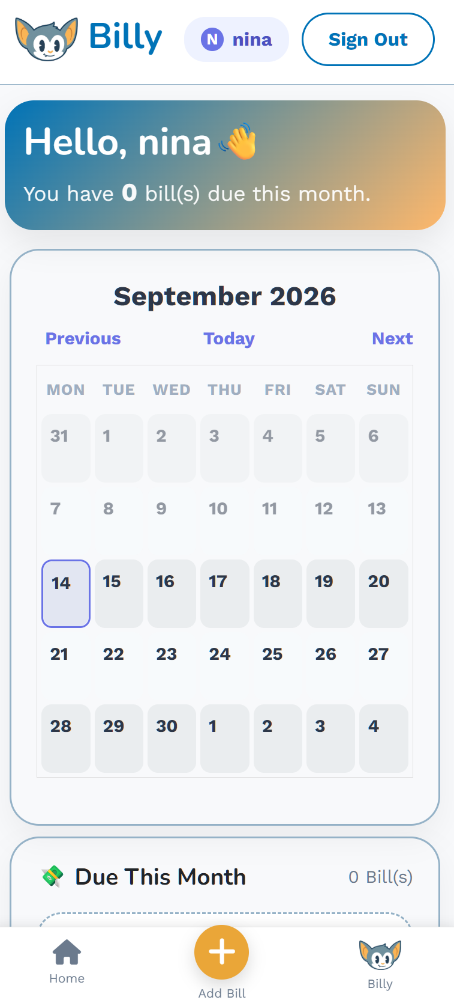
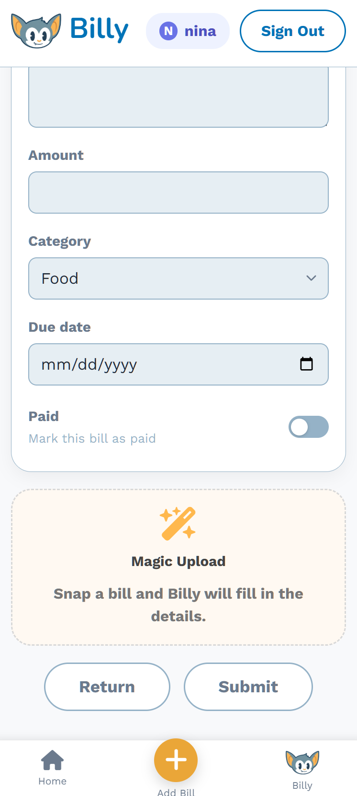

01
Somani
AI-powered Japanese learning companion that turns everyday text into personalized practice. Built in 4 weeks in a team of 4 as the final project to Le Wagon Tokyo's AI Software bootcamp.
Explore project ↗

TOKYO-BASED WEB DEVELOPER
I combine code and design to bring my ideas in the shower to life. I hope some of it is useful to you.
SELECTED WORK
Projects built with others and some built by me.
AI-powered Japanese learning companion that turns everyday text into personalized practice. Built in 4 weeks in a team of 4 as the final project to Le Wagon Tokyo's AI Software bootcamp.
Explore project ↗
A friendly app that makes recurring bills, shared expenses, and due dates easier to manage. Built in two weeks with a team of four.


ABOUT
For more than eight years, I designed learning experiences for diverse students in Japan. Today, I bring that same empathy, curiosity, and clear communication to software—building interfaces that help people feel capable, not confused.
I’m especially interested in accessible front-end experiences, thoughtful product design, and technology that makes everyday life a little easier.
Created inclusive curricula and supported learners from varied cultural backgrounds.
Built full-stack products through an intensive web development bootcamp.
Creating accessible, user-focused apps with code, research, and design.
Let’s build something useful.